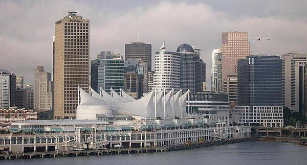

Introduction
Canada is a land of rich natural resources and vast distances.
Canada gained independence from Britain in 1931.
Economically and technologically, Canada has grown parallel to the United States.
Rcently Canada has faced the political challenges of meeting public demands for quality improvements in:
- Health care
- Education
- Social services
- Economic competitiveness
Canada now aims to develop their diverse energy resources while maintaining their committment to the environment.
Geography

The white sails of Canada Place in downtown Vancouver. Photo from The World Factbook 2021
Location
Canada is located in northern North America.
Canada borders the North Atlantic Ocean on the east and the North Pacific Ocean on the west.
Canada borders the Artic Ocean on the north.
Area
Canada Area Breakdown
| Body Type |
Area
|
| Water |
891,163 sq km |
| Land |
9,093,507 sq km |
| Total |
9,984,670 sq km |
Population Distribution
Majority of Canadians live about 300 km within the southern border of the United States.
The most populated provinces of Canada are:
- Ontario
- Quebec
- British Columbia
Economy
Economic Overview
The economy of Canada is a market-oriented economy system.
Canada also has high living standards similar to the United States.
After World War II, Canada has gone from a rural economy to a primarily industrial and urban economy.
Inflation Rate
Inflation Rates on Consumer Prices
| Year |
Percentage |
| 2017 |
1.5 |
| 2018 |
2.2 |
| 2019 |
1.9 |
Industries
- Transportation equipment
- Chemicals
- Processed and unprocessed minerals
- Food products
- Wood and paper products
- Fish products
- Petroleum
- Natural gas
Transportation
Airports
In 2021 Canada had a total number of 1,467 airports.
Railways
In 2021 Canada had 49,422 km total of railways. 129 km of those railways were electrified.
Roadways
Roadway Length 2011
| Type |
Length |
| Paved |
415,600 km |
| Unpaved |
626,700 km |
| Total |
1,042,300 km |